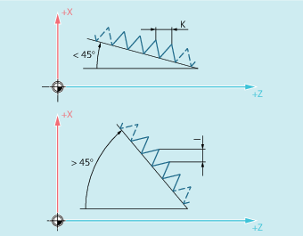

Feedrate for thread cutting with G33
From the programmed spindle speed and the thread lead, the control calculates the required feedrate with which the turning tool is traversed over the thread length in the longitudinal and/or transverse direction. The feedrate F is not taken into account for G33, the limitation to maximum axis velocity (rapid traverse) is monitored by the control.
Cylinder thread
The cylinder thread is described by:
Thread length
Thread lead
The thread length is entered with one of the Cartesian coordinates X, Y or Z in absolute or incremental dimensions (for turning machines preferably in the Z direction). Allowance must also be made for the run-in and run-out paths, across which the feed is accelerated or decelerated.
The thread lead is entered at addresses I, J, K (K is preferable for turning machines).
Face thread
The face thread is described by:
Thread diameter (preferably in the X direction)
Thread lead (preferably with I)
Tapered thread
The tapered thread is described by:
End point in the longitudinal and transverse direction (taper contour)
Thread lead
The taper contour is entered in Cartesian coordinates X, Y, Z in absolute or incremental dimensions - preferentially in the X and Z direction for machining on turning machines. Allowance must also be made for the run-in and run-out paths, across which the feed is accelerated or decelerated.
The specification of the lead depends on the taper angle (angle between the longitudinal axis and the outside of the taper):
